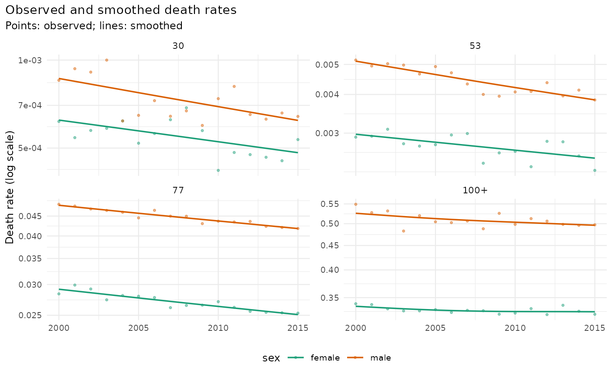

mt_smooth_check() compares smoothed with raw rates per stratum:
Usage
mt_smooth_check(data, smoothed)
mt_plot_smooth(
data,
smoothed,
ages = NULL,
strata = NULL,
colour = NULL,
along = c("period", "age"),
periods = NULL
)Arguments
- data
The mt_data object before smoothing.
- smoothed
The result of
mt_smooth()(or ofmt_prep()steps).- ages
Age labels to show (default: four ages across the range).
- strata
Stratum labels to show (default: all).
- colour
Stratum variable that gives the colours.
- along
"period"(rates over time, one panel per age) or"age"(rates over age, one panel per year inperiods).- periods
Years shown with
along = "age"(default: first and last).
Value
mt_smooth_check(): a data.table with the stratum columns, the
measures above and edf. mt_plot_smooth(): a ggplot object.
Details
mad_log: median absolute difference of log rates;dispersion: the Pearson estimate of the dispersion of the raw deaths around the smoothed deaths, the sum of squared Pearson residuals divided byn - edf(McCullagh and Nelder 1989), wherenis the number of smoothed cells with raw deaths andedfthe effective degrees of freedom of the fits of the stratum (columnedf, from the attribute"smooth"ofmt_smooth(); when it is not available, for example after further preprocessing steps, the sum is divided bynandedfisNA). About 1 when smoothing removed Poisson noise only, above 1 when the raw rates vary more (for example year effects), well below 1 when the smoothing follows the noise;trend_ratio: variance of year-to-year changes of the smoothed log rates relative to that of the raw log rates (mean over ages); small values mean that smoothing removed most of the annual variation;correlation: correlation of raw and smoothed log rates.
The measures use the smoothed cells only (provenance "smoothed"), so
ages left out of the smoothing (see ages in mt_smooth()) do not
dilute them.
mt_plot_smooth() shows raw rates as points and smoothed rates as lines
over time, one panel per age.
Examples
x <- mt_example(deaths = "single", years = 2000:2015)
s <- mt_smooth(x, along = "period", method = "whittaker")
mt_smooth_check(x, s)
#> stratum sex label mad_log dispersion trend_ratio correlation edf
#> <int> <char> <char> <num> <num> <num> <num> <num>
#> 1: 1 female female 0.01237280 0.9935176 0.2413490 0.9996135 434.4595
#> 2: 2 male male 0.01574177 0.9369526 0.1131588 0.9996879 297.3892
if (requireNamespace("ggplot2", quietly = TRUE)) mt_plot_smooth(x, s)
